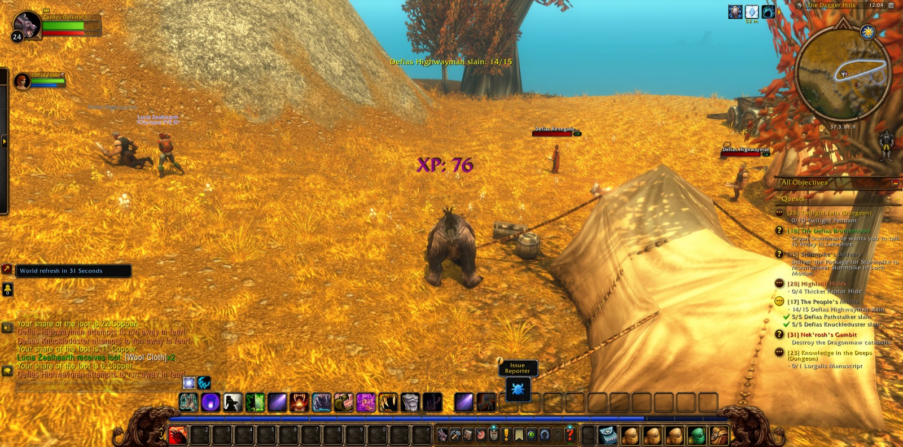

Cassidy Darkstar came again into the Dagger Hills of Westfall, where the Defias Highwaymen held the road, and there he took up the work of the People's Militia. Among those hills he saw the errand called Thunderbrew to its end. Lucia the Paladin joined him on the way, and together they made good the tally of fifteen highwaymen. A Defias Renegade Mage fell besides. Cassidy stopped more than once to take a picture of that country, as one who means to remember it.


Below Moonbrook lay the Deadmines. Вольда the Hunter walked with him as far as the Defias Hideout and no farther, and Lucia parted from him there as well. But Abbigale, a Hunter, kept faith with him longest in the deep places, and Oldschool, another Hunter, came to stand beside them near the end. The deep was not won cheaply, and once at least it threw him down. Yet the Undead Dynamiters were overcome, and an Undead Excavator, and the Skeletal Miners. Four Miners' Union Cards were gathered for the errand of Collecting Memories. Foreman Thistlenettle was overthrown, and his badge was taken for the errand named Oh Brother. Then the companions went their several ways.


At Sentinel Tower he gave account of the Militia's work, and afterward he took the road north past Saldean's Farm, by the Darkened Bank of Duskwood and Mirror Lake in Elwynn Forest, and so through the Valley of Heroes into Stormwind City. In Old Town he took up The Color of Blood. In the Dwarven District he laid down both Oh Brother and Collecting Memories, and there he came into the strength of his twenty-fifth level and was named a Novice Druid of his order. A picture marked the moment. He accepted Gyrodrillmatic Excavationators and looked in at the Stormwind Stockade before turning back to Elwynn. At the Tower of Azora he saw Further Concerns through. By Stone Cairn Lake he found the lost guards and learned the fate of Rolf, and he bore the medallions of Rolf and Malakai to Guard Thomas at the eastern bridge. Thomas' report he carried to Goldshire. He slew Young Forest Bears and Prowlers near Ridgepoint Tower to Protect the Frontier. To Sara Timberlain at Eastvale Logging Camp he brought the Stormwind Armor Marker, and from Brackwell Pumpkin Patch he gathered six Red Linen Bandanas for her.


At last he came to Menethil Harbor in the Wetlands and the Deepwater Tavern, and he took up Lost in the Thicket Things and the Fall of Dun Modr. Through Bluegill Marsh and Sundown Marsh he went to the Angerfang Encampment. There Slyra the Warrior stood with him against the Dragonmaw, their swamprunners and raiders and bonewarders, and Nek'rosh's Gambit was completed and Defeat Nek'rosh taken up. In Mosshide Fen he worked long and patiently among the gnolls, making many pictures as he went, until ten Mosshide Mongrels and fifteen Mosshide Gnolls had fallen for Tramping Paws. A Leech Stalker yielded the gland needed for Alchemical Hazards, and Fire Taboo was accepted. Northward he came to Dun Modr, where the Fall of Dun Modr was laid to rest and The Dark Iron War begun, and he paused in Ironbeard's Tomb to take a picture. Then he returned to Menethil Harbor and set down Alchemical Hazards.


The road from Menethil ran on into the Wetlands, and Cassidy Darkstar had business yet along it.


